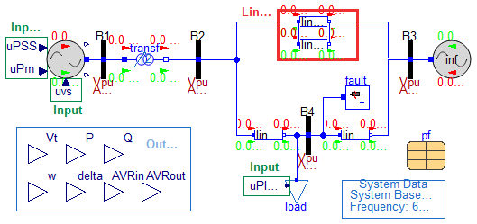

These models are not to be used for any purpose other than presenting figures in documentation.
Contains models whose visual appearance has been modified for documentation or publications.
Do not use for simulation purposes.
Extends from Modelica.Icons.InternalPackage (Icon for an internal package (indicating that the package should not be directly utilized by user)).
| Name | Description |
|---|---|
| gridIO | For figure only |
For figure only

Reference |
SMIB PSAT, d_kundur2.mdl, PSAT |
Last update |
June 24, 2022 |
Author |
Luigi Vanfretti |
Contact |
luigi.vanfretti@gmail.com |
Extends from Base.Networks.BasePFnFault (Partial SMIB Model with power flow data and a fault component).
| Type | Name | Default | Description |
|---|---|---|---|
| Line Removal Parameters | |||
| Time | t1 | Modelica.Constants.inf | Time of line removal [s] |
| Time | t2 | Modelica.Constants.inf | Line re-insertion time [s] |
| Integer | opening | 1 | Type of opening (1: removes both ends at same time, 2: removes sending end, 3: removes receiving end) |
| PSS | |||
| Real | Kw | 9.5 | Stabilizer gain (pu/pu) |
| Real | Tw | 1.41 | Wash-out time constant (s) |
| Real | T1 | 0 | First stabilizer time constant (s) |
| Real | T2 | 0 | Second stabilizer time constant (s) |
| Real | T3 | 0 | Third stabilizer time constant (s) |
| Real | T4 | 0 | Fourth stabilizer time constant (s) |
| AVR | |||
| Real | vfmax | 7.0 | max lim. |
| Real | vfmin | -6.40 | min lim. |
| Real | K0 | 200 | regulator gain |
| Type | Name | Description |
|---|---|---|
| output RealOutput | Vt | |
| output RealOutput | P | |
| output RealOutput | Q | |
| output RealOutput | w | |
| output RealOutput | delta | |
| output RealOutput | AVRin | |
| output RealOutput | AVRout |